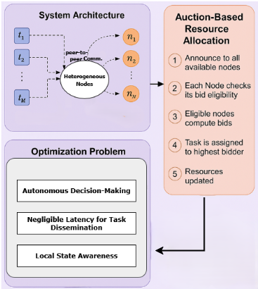
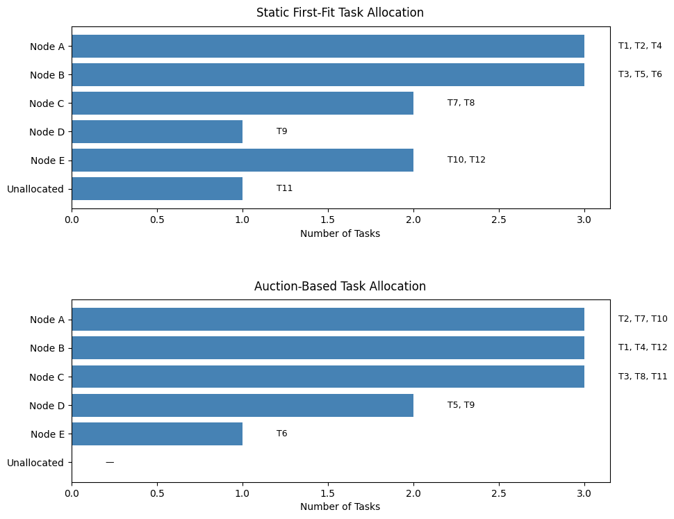
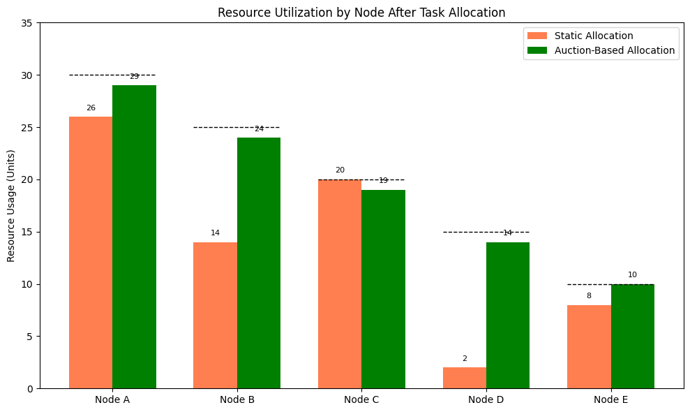
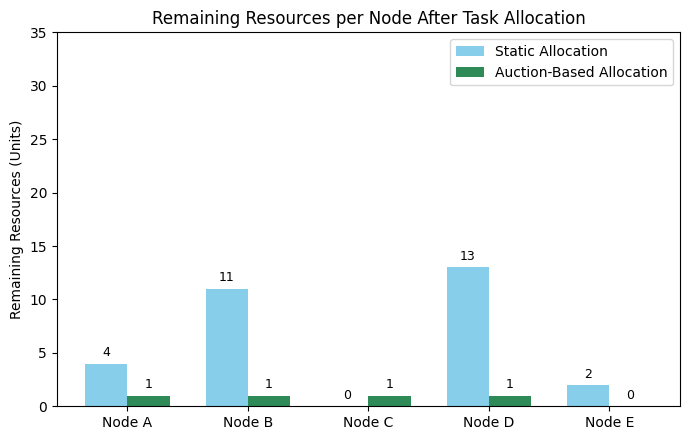
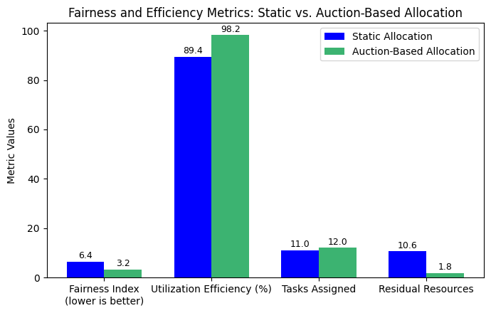

Research Motivation
Low-latency edge networks must place tasks under shifting demand, heterogeneous hardware, and finite local resources. Centralized scheduling struggles in that setting.
Distributed systems researcher, edge computing engineer, and the highlighted author across every public profile linked in this portal.
This repository reconstructs the project as a publication-grade research artifact: a GitHub Pages portal, paper-grounded analytics, downloadable materials, protected document access modeled after your previous project, and a researcher-first presentation centered on Md Anisur Rahman Chowdhury.
Publication Overview
The paper addresses a familiar failure mode in distributed edge systems: static assignment policies leave fragmented capacity across heterogeneous nodes, causing avoidable task rejection and poor utilization under dynamic load.
Low-latency edge networks must place tasks under shifting demand, heterogeneous hardware, and finite local resources. Centralized scheduling struggles in that setting.
The goal is to maximize successful task placement while respecting node capacity constraints and improving fairness across the network.
Compared with static first-fit allocation, the auction-based method reports stronger utilization, lower fragmentation, zero task rejection, and more balanced use of nodes.
Edge computing networks need to dynamically distribute their limited and heterogeneous computation resources to handle changing tasks efficiently.
Auction Framework
The paper models tasks as broadcast opportunities. Feasible nodes compute bids from residual capacity and quality, and the highest eligible bidder receives the task.

Representative testbed spanning different capacities and hardware profiles.
Task demands span small, medium, and large resource classes.
Average metrics are reported across repeated randomized scenarios.
The bidding routine is reported with O(M · N) time complexity.
Experimental Setup
The portal uses task demands, reported allocations, average metrics, and figure-derived representative values taken from the local PDF. Where the paper provides only chart images, the site labels those values explicitly as digitized approximations.
| Platform | Ubuntu 22.04 on Intel Core i7-12700 CPU with 32 GB RAM |
|---|---|
| Trials | 20 randomized runs per scenario |
| Network size | 5 edge nodes |
| Task count | 12 tasks per run |
| Task | Demand | Class |
|---|---|---|
| Loading task data. | ||
Visual Analytics
Every plot below is tied to the local paper data. Distribution, capacity, and assignment views are either directly based on the tables or explicitly labeled as derived from reported figures.
Shows how the twelve tasks spread across small, medium, and large resource demands.
Resource units are aggregated by task class to show where the workload pressure concentrates.
Uses the figure-labeled representative run to compare how evenly each strategy loads the five nodes.
Visualizes which node receives each task under the two reported allocation strategies.
Derived from the task table, allocation mappings, and representative node capacities extracted from the paper figures.
Highlights how higher-demand tasks are routed toward larger-capacity nodes in the auction-based strategy.
Reported Results
The paper reports both averaged metrics across 20 randomized trials and specific representative-run figures. The site keeps those two views separate so the evidence trail remains clear.

Representative run comparison between static first-fit placement and auction-based placement.

Figure-labeled node usage values are used in the violin and remaining-resource comparisons.

Shows how the auction mechanism leaves substantially less fragmented capacity across the network.

Summarizes lower fairness-index variance, higher utilization, more tasks placed, and fewer residual units.
Select a task to compare how each strategy treats it.
Project Walkthrough
The repository links the published paper to the project video so visitors can move from summary narrative to supporting material without leaving the portal.
Protected Documents
The main paper bundle now follows the same controlled access pattern used in your previous SIF-CCA project: profile verification, password request, password entry, and encrypted downloads.
Visitors can still explore the public report and poster pages, but the downloadable research files are now presented through a gated workflow and password-protected encrypted archives.
Download the IEEE paper as a password-protected encrypted archive instead of a direct public PDF link.
A second encrypted archive groups the portal files, report, poster, data, and documentation into a reusable protected package.
Your report, poster, repository, and full profile hub remain public so visitors can validate authorship before requesting protected downloads.
Open profile hubResources
Everything here is organized for GitHub Pages deployment from the `docs/` folder and for direct use in academic portfolio or project review contexts.
Md Anisur Rahman Chowdhury
Department of Computer and Information Science, Gannon University
Loading citation.
Only the task-volume efficiency line values are approximate digitizations from Figure 6 because the local PDF does not provide that chart as a numeric table.
The paper includes average metrics across 20 randomized trials and distinct representative-run visuals. The portal preserves that separation to avoid inventing a merged dataset.
Yes. The project is structured for Pages deployment from the `docs/` directory on the main branch.
Author Profiles
Every major public identity channel for Md Anisur Rahman Chowdhury is collected here so authorship, collaboration, citation, and contact are easy to verify.
Professional profile, academic background, and engineering identity.
linkedin.com/in/md-anisur-rahman-chowdhury-15862420aResearch repositories, web artifacts, and project source history.
github.com/ANIS151993Publication index, citation visibility, and academic discovery channel.
scholar.google.com/citations?user=NQyywPoAAAAJPersonal showcase site for projects, publications, and technical presentation.
marcbd.siteResearch network presence for collaboration, visibility, and publication sharing.
researchgate.net/profile/Md-Anisur-Rahman-ChowdhuryPassword requests, research communication, and collaboration inquiries.
engr.aanis@gmail.com